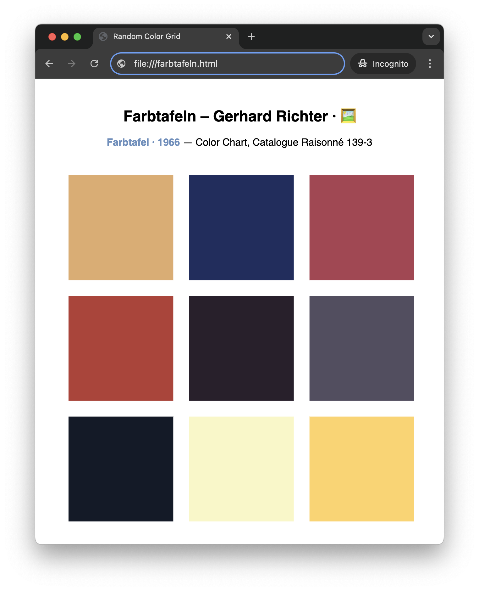

Farbtafel (Color Chart) webpage — Gerhard Richter inspired · 🤖🎨
Over the weekend, I ran into two books in our local bookstore.
- Schneede, U. M., & Richter, G. (2024). Gerhard Richter: Der unbedingte Maler. C.H.Beck. — ISBN-13 978-3406821493
- Taulli, T. (2024). AI-assisted programming: Better planning, coding, testing, and deployment. O’Reilly. — ISBN-13 978-1098164560
For some time, I had the idea of creating a program to reproduce the Farbtafeln (Color Charts) by Gerhard Richter, a German painter. Richter’s Farbtafeln are a series of abstract paintings composed of grids filled with randomly arranged colored squares, showcasing his exploration of color and chance. This weekend, paired with the inspiration from these two books, provided a good opportunity to bring that idea to life and explore how AI could assist in such a creative programming project.
Project Overview · 📋
In this project, I created a program replicating Gerhard Richter’s Farbtafeln. By leveraging AI-assisted programming, I developed a webpage that generates a random color grid inspired by Richter’s work. This project highlights the potential of AI assistants in creative coding.
It marks my first experience with AI assistants suggesting nearly all of the code, which I then reviewed and refined. My knowledge of JavaScript, Processing (p5.js), and CSS is rather limited and the AI assistants helped me implement the Farbtafeln efficiently.
The resulting webpage dynamically reshuffles the colors of the grid with each refresh, offering a fresh take on Richter’s exploration of randomness and color.
Development · 🛠️
So here is a summary of my steps to create the Farbtafeln code, documentation, and this blog post with AI assistants.
1. Some Tech Background · 🧑💻
I knew that p5.js would be a good fit for creating a Farbtafel webpage. p5.js is a JavaScript library that simplifies the creation of graphics and interactive content for the web.
However, my knowledge of p5.js, JavaScript, and CSS is limited. Building the project from scratch with these tools would have been tedious for me. With the help of AI assistants, the process became not only manageable but also enjoyable.
2. A p5.js Script in ChatGPT · 🤖
To create the page, I started by uploading an image of one of the original Farbtafeln to ChatGPT and asking it to generate a p5.js script to replicate the image. I then revised the script. Here are the steps I took in ChatGPT:
- Defined the role for ChatGPT and provided information about my programming background.
- Uploaded a Farbtafel image to ChatGPT and asked it to create a p5.js script.
- Got explanations for parts of the script.
- Modified the script to remove square borders and add padding.
- Refactored the script with ChatGPT’s instructions (created functions).
- Created a webpage with the script.
While interacting with ChatGPT, I ran and modified the script in the p5.js Web Editor in another browser tab.
ChatGPT was an invaluable assistant to generate an initial version of the page, generating code, offering clear explanations, and refining the Farbtafeln script based on my inputs. It streamlined development and enriched my learning experience, highlighting the benefits of AI in creative coding.
3. Completing with Copilot · 💻
After creating the initial script with ChatGPT, I turned to GitHub Copilot for further refinements and enhancements. Here are the steps I followed with Copilot:
- Created a project in VS Code with GitHub Copilot enabled.
- Revised the script based on Copilot’s recommendations.
- Added and refined CSS styles for the page.
- Added and revised page and script comments.
Copilot helped me create a simple yet visually appealing webpage. The additional revisions I made to the processing script were minimal. I really appreciated the workflow, with the script in my editor being modified based on Copilot’s suggestions. It was an interactive process I preferred over the ChatGPT chat-based interaction.
4. Creating the README · 📄
With GitHub Copilot, I generated a README file for the project by following these steps:
- Created a new, empty
README.mdfile in the project directory. - Used Copilot to generate an initial draft.
- Reviewed and refined the content manually.
- Added links to relevant resources.
The structure of the suggested README was helpful, and the content provided some good initial ideas. However, it was overly general and somewhat bloated, so I significantly revised the document manually.
5. Writing the Blog Post · 📝
Finally, I asked GitHub Copilot to generate this blog post based on the page code and the README. Here are the steps I used:
- Created an empty Markdown file.
- Asked Copilot to generate the blog post.
- Reviewed and revised each paragraph with Copilot.
- Added sentences and paragraphs manually.
- Revised and finalized the draft with ChatGPT.
The generated post served as a solid foundation, but I refined it significantly to better reflect my experience. ChatGPT was particularly helpful for fine-tuning the content and improving its flow, while Copilot provided a reasonable starting point for structuring the post.
Final Thoughts · 💭
This project was a great example of how AI, ChatGPT and Copilot, can assist in the development process. By generating code and providing suggestions, AI assistants helped streamline the creation of this random color grid. The result is a simple and visually appealing webpage that pays homage to Gerhard Richter’s iconic color charts.
The code was generated quickly with ChatGPT, and I was impressed by the quality. However, creating the documentation and blog post took more time. While AI drafted the README and blog post, it was less instrumental, and I spent significantly more time refining them manually.
Overall, I thoroughly enjoyed this project, and I’m very pleased with how the Farbtafeln-inspired webpage turned out. It brings Richter’s exploration of color and chance nicely into a digital space.
Links · 🔗
